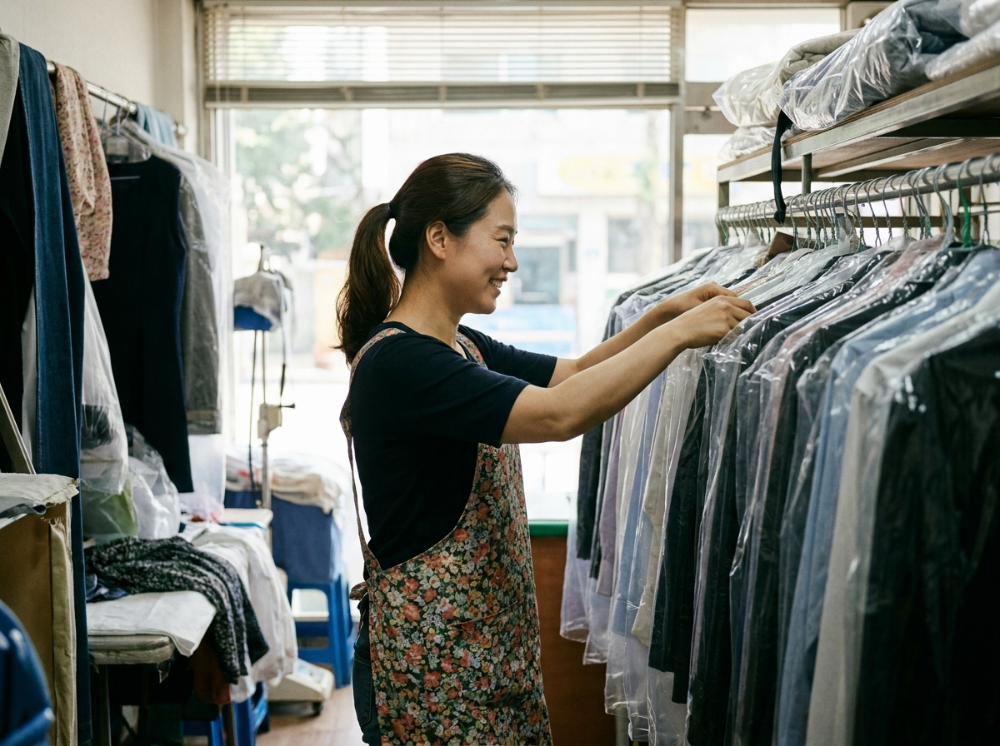
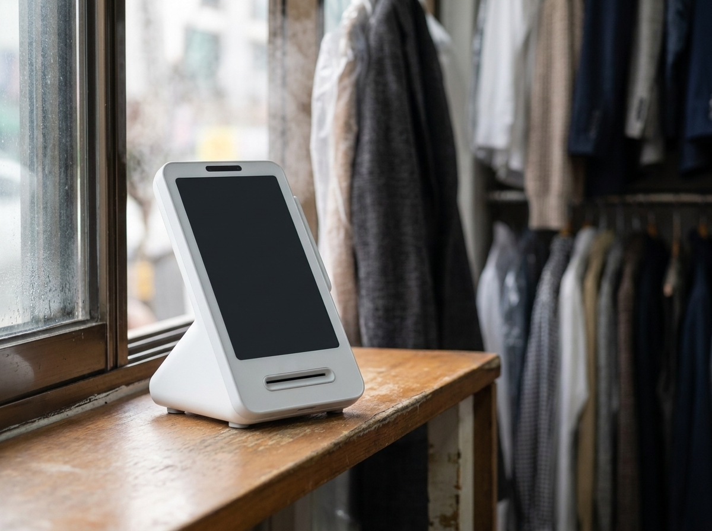
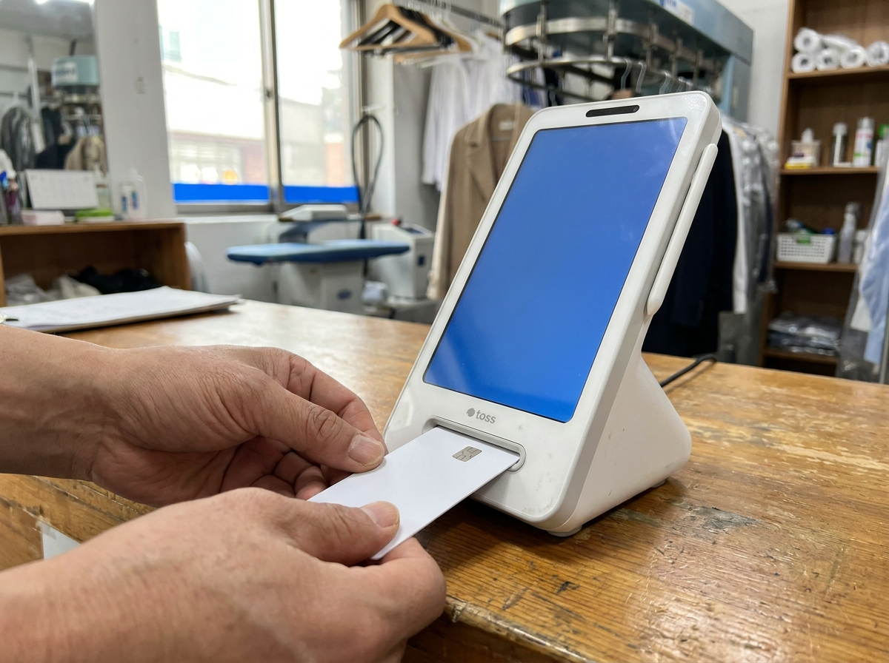

가게 보험, 가입 여부보다 '무엇이 빠져 있는지'가 중요합니다 (화재와 배상은 다른 문제)
사고 대비를 이야기할 때 가장 먼저 정리해야 할 것은 상품 이름이 아니라 구분입니다. 내 가게가 타서 내가 손해를 본 것(재산 손해)과, 그 불이 옆 가게나 건물에 옮겨붙어 남에게 피해를 준 것(배상 책임)은 서로 다른 문제입니다. 하나로 묶여 있을 것 같지만 실제로는 보장하는 영역이 다르고, 상품 구성에 따라 한쪽만 들어 있는 경우도 흔합니다. 누리네트웍스는 수도권 매장을 직접 방문해 설치하고 관리하는 포스·결제단말 전문 업체입니다. 현장에서 사장님들을 만나다 보면 "보험은 들어 놨는데 뭐가 되는지는 잘 모르겠다"는 말씀을 자주 듣습니다. 이 글에서는 가입 여부가 아니라 보장 범위를 확인하는 관점, 그리고 사고가 났을 때 손해를 증명하는 기록의 문제를 정리했습니다.

우리 가게가 탄 것과, 남에게 피해를 준 것은 다릅니다
동네 세탁소를 예로 들어 보겠습니다. 좁은 카운터 뒤로 옷걸이 레일이 늘어서 있고, 세탁기와 건조기, 다림질 설비가 쉬지 않고 돌아갑니다. 열을 쓰는 기기가 많고, 손님 옷이라는 남의 물건을 잔뜩 보관하고 있다는 점에서 사고가 났을 때 얽히는 범위가 넓은 업종입니다.
여기서 불이 났다고 가정하면 손해는 최소 세 갈래로 갈라집니다. 첫째, 내 설비와 인테리어가 타는 손해. 둘째, 맡아 둔 손님 세탁물이 훼손되는 손해. 셋째, 불이 옆 가게나 위층으로 번지거나 건물 자체가 상하는 손해입니다. 세 번째부터는 내 재산이 아니라 남에 대한 책임을 따지는 영역으로 넘어갑니다. 다만 불이 번진 경우에는 과실의 정도에 따라 배상 범위를 다투게 되는 별도의 법률 기준이 있어, 결과는 사안마다 달라집니다. 구체적인 판단은 법률·보험 전문가와 상의하시는 편이 정확합니다.
문제는 이 갈래들이 하나의 상품 안에 자동으로 다 들어 있지 않다는 점입니다. 어떤 구성은 내 재산 손해만 다루고, 어떤 구성은 타인에 대한 배상만 다룹니다. 맡아 둔 물건에 대한 부분은 또 별도로 정해져 있는 경우가 있습니다. 그래서 "화재보험 들었다"는 한마디만으로는 실제로 무엇이 보장되는지 알 수 없습니다.
미리 말씀드리면, 보험은 저희 회사의 영역이 아닙니다. 어떤 상품이 좋다고 권해 드릴 입장도 아니고, 그럴 자격도 없습니다. 다만 사고가 난 매장을 옆에서 본 경험을 근거로, 확인해 보시라는 안내를 드리는 것입니다. 보장 범위와 가입 조건은 상품과 약관에 따라 크게 다르고 시기에 따라서도 달라지므로, 금융감독원과 가입하신 보험사 약관에서, 정책성 보험은 행정안전부·관할 지자체 안내에서 직접 확인하시길 권합니다.
손님이 다쳤을 때, 그리고 여름철 침수·태풍
사고가 화재만 있는 것은 아닙니다. 매장 안에서 손님이 다치는 일도 자주 벌어집니다. 세탁소라면 물기가 남은 바닥에 손님이 미끄러지는 상황이 대표적입니다. 매장 운영 과정에서 손님에게 생긴 피해 역시 배상 책임의 영역이고, 이 부분이 구성에 들어 있는지 아닌지는 상품마다 다릅니다.
여름에는 자연재해가 하나 더 붙습니다. 장맛비에 도로가 잠기면 반지하나 1층 매장은 설비와 보관 중인 물건이 함께 젖습니다. 태풍에 간판이나 유리가 상하는 경우도 있습니다. 이런 피해가 어디까지 다뤄지는지, 자기부담 조건이 어떻게 걸려 있는지는 약관에서 확인해야 하는 부분입니다.
아래 표는 상품을 고르라는 표가 아니라, 가입해 둔 서류를 펼쳐 놓고 하나씩 대조해 보시라는 점검표로 만들었습니다.
| 확인할 항목 | 이런 상황을 뜻합니다 |
|---|---|
| 내 재산 손해 | 설비·인테리어·집기가 화재나 사고로 손상된 경우 |
| 타인에 대한 배상 | 불이 옆 가게·위층·건물에 번져 피해를 준 경우 |
| 맡아 둔 물건 | 손님이 맡긴 세탁물처럼 보관 중인 남의 물건 |
| 방문 손님 피해 | 매장 안에서 손님이 미끄러지거나 다친 경우 |
| 자연재해 | 침수·태풍·강풍으로 설비와 시설이 상한 경우 |
| 영업 중단 | 복구 기간 동안 문을 못 여는 동안의 손실 |

임차인이 챙길 부분과, 건물주 보험이 덮지 않는 영역
세를 들어 장사하시는 사장님들이 가장 많이 오해하시는 지점이 여기입니다. "건물주가 보험 들었다니까 나는 괜찮겠지"라고 생각하기 쉽습니다. 그런데 건물에 걸린 보험은 대체로 건물이라는 자산을 보는 쪽에 가깝습니다. 내가 돈을 들여 넣은 인테리어, 내가 산 설비, 내가 맡아 둔 손님 물건, 그리고 내 과실로 남에게 생긴 피해까지 자동으로 함께 다뤄진다고 보기는 어렵습니다.
오히려 임차인 입장에서는 반대 방향도 살펴야 합니다. 내 매장에서 시작된 사고로 건물이 상했을 때, 건물주에게 그 손해를 갚아야 하는 상황이 생길 수 있기 때문입니다. 임대차 계약서에 원상회복이나 손해 부담에 관한 조항이 어떻게 적혀 있는지도 함께 확인해 두시는 편이 좋습니다. 여기서도 결론은 같습니다. 무엇이 보장되고 무엇이 빠져 있는지를 아는 것이 먼저입니다.
한 가지 더 알아 두실 것이 있습니다. 소상공인을 대상으로 한 정책성 보험이나 지원 제도가 운영되는 경우가 있습니다. 다만 대상 조건, 지원 방식, 운영 여부는 시기와 사업에 따라 달라지므로 여기서 금액이나 기간을 말씀드리기는 어렵습니다. 해당되는 부분이 있는지 공식기관 안내를 통해 확인해 보시길 권합니다.
사고가 났을 때, 손해는 숫자로 증명해야 합니다
여기서부터가 저희가 실제로 도와드릴 수 있는 영역입니다. 사고가 나면 반드시 따라오는 질문이 있습니다. "얼마나 손해를 봤습니까?" 설비는 사진과 영수증으로 보여 줄 수 있습니다. 그런데 문을 못 연 동안의 매출 손실은 평소 매출이 기록으로 남아 있어야 말이 됩니다.
현금 위주로 받고 수첩에만 적어 두었다면 이 대목에서 막힙니다. 평소 하루 매출이 어느 정도였는지, 어떤 요일이 잘 됐는지 보여 줄 자료가 없으면 설명이 길어집니다. 반대로 결제를 한 대로 모아 두었다면 일자별 흐름이 그대로 남습니다. 보험 이야기가 아니라 사후 대응의 기본입니다.
이런 환경을 가볍게 만들기 좋은 선택이 토스단말기입니다. 카드와 주요 간편결제를 한 대로 받을 수 있어, 손님이 어떤 방법으로 내시든 결제 기록이 한 기기에 모입니다(지원 결제수단은 상담 시 안내해 드립니다). 매출 내역은 앱에서 확인할 수 있어 카운터를 지키면서도 오늘과 지난주의 흐름을 볼 수 있습니다. 크기가 작아 세탁소처럼 좁은 카운터에도 무리 없이 놓이고, 약정 부담 없이 시작할 수 있다는 점도 초기에는 도움이 됩니다. 누리네트웍스는 정품 신제품 보증과 수도권 직영 설치·관리를 원칙으로 하며, 구성과 비용은 매장 상황에 따라 달라지므로 상담 시 안내해 드립니다.

자주 묻는 질문(FAQ)
Q. 화재보험 하나만 들어 두면 다 되는 것 아닌가요?
그렇게 보기는 어렵습니다. 내 재산이 상한 손해와, 남에게 피해를 준 배상 책임은 다루는 영역이 다릅니다. 상품 구성에 따라 한쪽만 들어 있을 수 있으니 가입해 둔 서류에서 두 부분이 각각 어떻게 되어 있는지 확인해 보시는 편이 좋습니다.
Q. 손님이 맡긴 세탁물이 상하면 어떻게 되나요?
맡아 둔 남의 물건은 내 재산과 별개로 다뤄지는 경우가 많습니다. 보관 중인 물건에 대한 부분이 구성에 포함되어 있는지가 관건이라, 이 항목이 어떻게 적혀 있는지 따로 확인해 보시길 권합니다.
Q. 건물주가 보험을 들었으면 저는 안 들어도 되나요?
건물에 걸린 보험과 임차인이 챙겨야 할 영역은 같지 않습니다. 인테리어와 설비, 맡아 둔 물건, 내 과실로 남에게 생긴 피해는 별개로 봐야 합니다. 임대차 계약서의 손해 부담 조항도 함께 확인해 두시면 좋습니다.
Q. 소상공인을 위한 지원 제도도 있다고 들었습니다.
운영되는 경우가 있지만 대상 조건과 지원 방식, 진행 여부는 시기와 사업에 따라 달라집니다. 저희가 금액이나 기간을 안내드릴 수 있는 영역이 아니니 금융감독원과 가입하신 보험사 약관에서, 정책성 보험은 행정안전부·관할 지자체 안내에서 직접 확인하시길 권합니다.
사고는 못 막아도, 기록은 남겨 두실 수 있습니다
보험은 저희가 권해 드릴 분야가 아닙니다. 다만 서류를 한 번 펼쳐 무엇이 보장되고 무엇이 빠져 있는지 확인해 보시라는 말씀은 드릴 수 있습니다. 그리고 그 옆에서 저희가 도와드릴 수 있는 부분은, 평소 매출이 흩어지지 않고 기록으로 남는 결제 환경을 만들어 두는 일입니다. 어떤 업종에서 어떤 방식으로 장사하시는지 말씀해 주시면 그에 맞는 구성을 함께 찾아 드리겠습니다. 수도권은 직접 방문해 설치하고 관리해 드리니 부담 없이 문의 주세요.
- 📞 전화상담 1544-7754
- 🌐 홈페이지 https://nwpos.co.kr

📷 인스타그램 팔로우 https://www.instagram.com/nurinetworkspos

▶️ 유튜브 구독 https://www.youtube.com/@nurinetworks